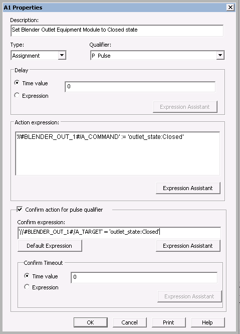

The AGITATE running logic
The first step in the SFC for the AGITATE phase running logic includes a number of actions. If we confirmed them all in a single transition statement, it would look like this:
('//#BLENDER_OUT_1#/A_TARGET' = '$outlet_state:Closed'
AND '//#COLOR_IN_VLV#/DC1/PV_D' = 'vlvnc-pv:CLOSED'
AND '//#BASE_IN_VLV#/DC1/PV_D' = 'vlvnc-pv:CLOSED')
To simplify the logic, each action will have a confirm expression. For example, here is the Properties dialog for the first step action, which sets the BLENDER_OUTLET equipment module to a closed state.

If you imported the Complete.fhx database, the logic for the AGITATE phase class will not match exactly the figures shown in the next few topics. The phase classes in the database include changes that will be made later in this tutorial to allow us to monitor failure conditions.
Before you configure the running logic, you will add the new phase algorithm parameter, AGIT_FLAG, so that you will be able to browse for it when you create the running logic.